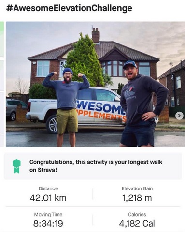
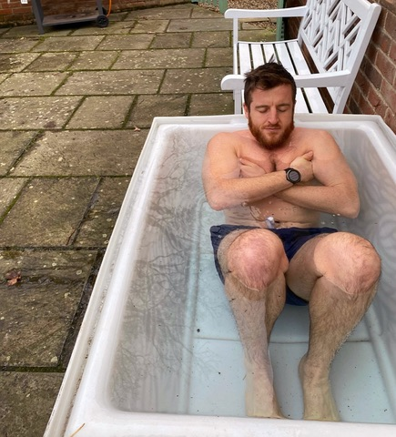
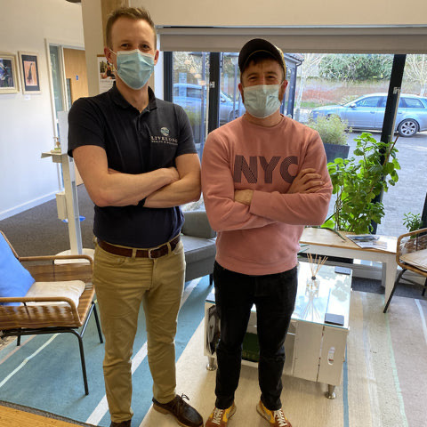
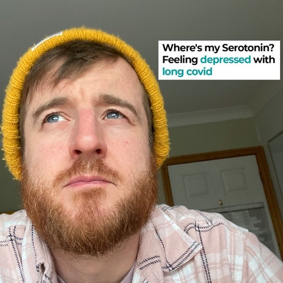
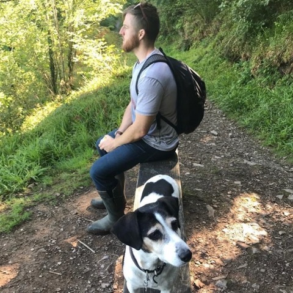
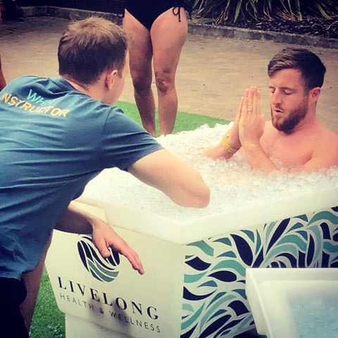
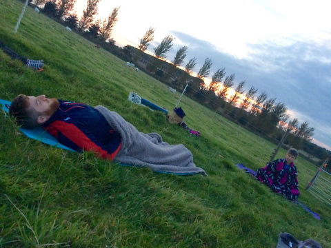
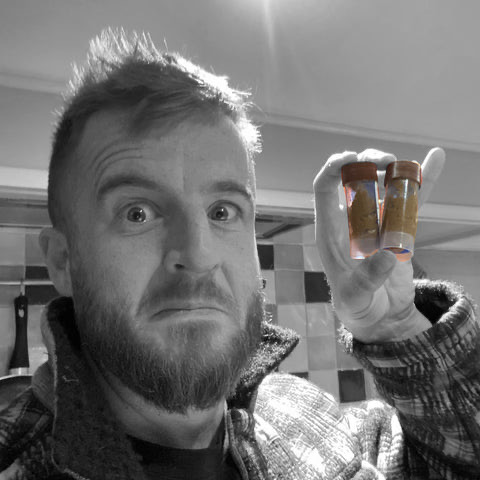
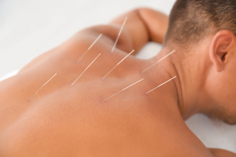

My recovery from long covid: Diet, Supplements & Testing

I am 100% recovered from Long Covid, HARRAH. It’s been 3 months symptom free now (updated as of *28/11/22, 9 months symptoms free now), and I’ve returned to normal levels of exercise training with weights 3x per week and some occasional sport. I’ve won the battle. So if I can do it, so can you. It’s been a 14-month journey with it (22 months if you include the battle with my hormones after that), many months being very dark and worrying – so dark I wondered if it would ever end, if I would ever get better, and now this is my story of recovery… I hope it helps anyone suffering with Long Covid.
(If you want the “Do this” part of this blog where I recommend what I would do if I had long covid again, skip to the 13-point list towards the end. If you want the context, and my story, which if you are serious about recovery you will need, then read on…)
Approx Reading time: 40 mins
I first experienced major Long-Covid symptoms on November 12th, 2020. The date of writing this is 12th March 2022, so nearly 17 months since first getting my symptoms. I believe that I first contracted Covid in July 2020 when lockdown was eased, and we had a small celebration for my birthday with friends and family. Initially I didn’t really get any symptoms, other than the general cold/flu like symptoms, and my wife lost her sense of taste and smell. We didn’t really read into it too much because we’d just had our first child on 31st March 2020, so we were exhausted from the lack of sleep. We both seemingly recovered fine and continued about our lives as busy and under slept, but happy new parents over the rest of that summer. I did feel like my exercise recovery was a little bit impaired, but I put it down to the stresses and strains of being a working new parent and as I didn’t have much time to exercise anyway, I didn’t read into it too much and just got on with it.
But then on November 11th, 2020, I did a charity event, walking a marathon the height of Everest on a giant hill in my local town Ipswich. For proof, here is my IG post after:

(Click here to view this post)
I shared quite a few posts on my IG during my recovery, which you can have a scroll and find, this being one of them after a relapse:

(Click here to view this post)
(Click here to view my video on Ice Baths and Nasal Recovery)
(Click here to view recovery update post)
The next day after the charity event I experienced such an unusually high level of fatigue that I couldn’t get out of bed. It felt like I’ve been hit by a bus. I thought “I’m definitely not this unfit, this is really weird!” This went on for quite some time, I tried to get back to some form of exercise and never was able to get anywhere close to what I’d been able to do prior to the walking event. These symptoms lasted for about 6 weeks before I started to really think “there’s something wrong here, I don’t feel right at all, I still feel terrible. I can barely get out of bed, I can’t think straight, I feel depressed, I feel all over the place, I ache, WTF”
During this time, I developed the primary symptoms of Long-Covid; fatigue, a horrible pressure headache that was impossible to shake, POTS syndrome, brain fog, post exercise fatigue malaise, and depression. All in all, I felt awful and had never experienced anything like this in my life. There were mornings I would wake up and stare at the ground for a good hour before I could move. There were days I just didn’t want to get out of bed, where I felt like someone had pinned me to the bed with lots of weights. There were days positivity didn’t exist at all, that I just wanted to cry and hide. There were days I simply didn’t know what to do or how to function. It was horrible and upon reflection, the worst period of my life (which was a shame as it was also the happiest in many ways having our first child).
It got to just before Christmas and I felt that I needed help to get myself out of this situation. At that point in time, I’d done enough research to recognise that I had long Covid. I did do an antibody test but because it had been so long after the infection, which was assumed to be in July, it didn’t show anything.
Either way all my symptoms matched up to long Covid and I remain convinced that’s what it was to this day, there is no other plausible explanation – and judging by my symptom profile and how it happened, it very much adds up to a post viral fatigue state / chronic fatigue syndrome where the charity event was the (stress) straw that broke the camel’s back. Either way it was now time to embark on the path of recovery. Up until this point recovery had been extremely slow, if at all. It felt like 0.1% improvement every day and my strategy at this point was just to rest as much as possible, but with a new-born baby and a busy life that’s easier said than done. Nevertheless, I was trying my best, but it felt like rest alone wasn’t working.
I went and saw a coach, Tom Parry, a valued Osteopath I know who also works with meditation and breath work and asked him to guide me through the process of recovery. I knew that I would potentially be my own worst enemy in this process of recovery because I’m a go getter type personality who’s always keeping myself busy, loves to exercise, loves to get out there to do things and live life to the full. If anything, I’ve got the bad habit of always taking on too much, which is not a recipe for recovery from long Covid / chronic fatigue syndrome.

Tom gave me ways to slow down and pace my life more appropriately, while working to reduce my levels of inflammation. We implemented daily ice baths (to reduce inflammation), daily meditation (to calm my mind and gain perspective), Yoga Nidra (to calm my CNS and help me get into a healing state), and breathing exercises in order to help me feel like I was starting to regain control of my body and mind again and start to put me into a state of healing (it’s important to note that at this point it was still very early in the long covid story, so supplements and other advice was thin on the ground – so I was doing what I could to help my body recover).
The daily guided meditation helped to slow me down and gain perspective, and as soon as I implemented the daily ice baths I started to physically recover relatively quickly compared to where I’d been before. I went from barely functional, to functional but with pretty bad symptoms, that was a win for a dad struggling to get out of bed.
Fast forward to Spring 2021
My recovery was up and down. I’d improved significantly, but there was a long way to go. I would gradually improve but then I would have a relapse of symptoms due to some form of physical or mental stress, or too much exercise. I’d also see a reappearance of symptoms when I thought I was okay and maybe ready to implement some exercise and in fact I wasn’t, and it would send me back to (not fully) square one again (lesson, don’t exercise till you are very much towards the end of your long covid journey, the post exercise fatigue malaise seems to send a wave of inflammation through the body, inflammation is something that it just can’t process or handle).
Every time my symptoms re-emerged; I never knew how long it would take for me get better again. That uncertainty and lack of stability was one of the worst things about this experience. Up to that point my body had been something I’d always been able to rely on, but suddenly I could no longer trust it. To anyone reading this who’s suffering with long Covid please stay strong. Please be patient. To anyone that knows someone suffering with long Covid please be patient with them. It’s truly horrible, nothing like I can describe, and I don’t think you can truly understand it unless you’ve been through it yourself. I know I wouldn’t. I’ve had chats with people with ME/Chronic Fatigue Syndrome before and never really got it or could understand, but now I can.
Most days I felt depressed. Most days I couldn’t think straight. Most days I wanted to be in bed. Most days I struggled to do normal things. Most days I struggled to make even the simplest of decisions. Most days were simply a struggle. This was me for a good year after that fateful charity event. And at this point I’ll thank my wife for being so supportive, I know it was super tough being around me with a new born baby, so Lizzy, thank you.

(Click here to view this post)
Now in telling this story you will have to excuse my memory. It’s somewhat difficult to remember the details of my journey because I just took things day by day, that’s all I could do. So, my accuracy of recollection will be flawed. It also affected my brain a lot, so I never felt I could trust what I was thinking and feeling because it literally felt like it had re-wired my brain (and I’d argue it still feels like my brain isn’t 100%, but I have recently had my 2nd daughter, so sleep isn’t ideal so I’m not 100% sure).
Relapses
In terms of my frequency of relapses, it’s hard to describe how much I went backwards each time. But each relapse was shorter, and that’s how I knew after 6 months or so that I was getting better, albeit extremely slowly, like, 0.3% per day kind of recovery. The take home for people suffering here? I had a BIG relapse, then a big relapse, then a medium relapse, then a small relapse, then lots of micro relapses for a good 3-4 months, and now I’m symptom free. And that journey was 14 months long. So as long as your relapses are getting shorter each time, you know you’re recovering.
So, if you are reading this with long covid have hope, because if you do all the right things, it should get better. It did with me, and it has done with countless others. What does it mean for me today right now to be asymptomatic?
Where I'm currently at
I can work. I can walk 15-20,000 steps per day. I can live my normal life and be symptom free. There are still some things I need to work through, I’m still not my normal self mentally, but I’m working on it (update *28/11/22, I am now after more meditation, deep energy healing with a practitioner, and now being on TRT). Over the last 3 months since the start of the year I slowly built up my exercise again using swimming as the tool. I had read that swimming was well handled in people with long covid on the last parts of their recovery journey.
So, in January 2022 I did 2 lengths in a pool, then 4, then 6, and just kept building it up every few days with 2 more lengths. That’s how slow you need to go when adding stress (exercise) back into your life. I’ve just left swimming after building up to 40 minutes non-stop and have just started a bit of cardio on an assault bike with very low amounts of body weight training, which I am now building up in the same way. I’ll soon start cycling, which I have done a bit of during my recovery and seemed ok. So, I do think cardio has a very different effect on a body with long covid, so if you do exercise, depending on where you are in your journey, do a small amount of cycling, swimming, or walking, everything else I found was too much inflammation for my body, especially weight training.
What is interesting to note here is my symptoms officially 100% went (and they were fairly mild at this point in time), when my 2nd daughter was born. Weird right? Maybe not when you consider that the body is a multi-faceted, integrated being. This is why I don’t feel anyone can recover fully (from what I have experienced from my recovery) without considering the physical, mental, and emotional burden on the body. Emotions, stress, our mind, how we think, how we live our lives, it all affects our central nervous system and immune system, so please don’t overlook this side of your recovery (update *28/11/22, 6 months on I believe this more than ever. You must, IMO, do the mental and emotional side of this recovery journey, everyone I have met with long covid either has a past of being a type-A personality, an athlete, or suffered with anxiety, all people that have pushed their CNS too much, and continue to push their body mentally and emotionally. I'm now the most peaceful and calm person you will talk to now, and it's all down to the mental and emotional work I've done as part of this journey. please don skip it, I DO NOT believe this is just a physical disease).
So, what most need and want to know, how did I get to this stage of my recovery? What did I do?
Now, I’ve tried lots of different ways to find a solution, as many people suffering with this have over the last year. As the research evolves more things will come out, so I know and appreciate the validity of some of what I did will change as we understand more about Long Covid. The mindset I had with my recovery was “I’m not going to rely on my doctor (because at that time they couldn’t tell me or help me much), I’m going to approach my body as a being with a disease, and I’m going to try make it healthy on every level”. Yes, in thew world of medicine we know a lot about the body and can heal states with drugs, but when you don’t have answers, which we didn’t have when I had Long Covid at the start, and still don’t have many of the answers we want, you have to approach health in a holistic way, and treat body, mind and soul. IMO.
In my recovery journey there are some things that I think genuinely made an impact, there are others which I’m not so sure on, and others I’m pretty sure had zero impact. That’s part of the problem with conditions like this, we tend to throw everything at it in order to get better, but then we don’t know what really ends up working and making a difference. Thus, unfortunately, I can’t pinpoint it down to 2 or 3 things that I feel genuinely helped me recover with 100% confidence. But knowing what I know now, I think I have a rough formula that can work, and I know that the fast-emerging research in this area will help fill in any gaps for you.
I started my journey to recovery when nothing was known about long covid, but we know a lot more now, so have hope more answers are coming – but at the same time, take full control of your journey and don’t rely on anyone else to heal you, work to heal yourself.

The number one thing that worked, and everyone unanimously agrees with, is taking things super slowly. It can be the hardest thing with something like Long-Covid as we all want to be as proactive in our recovery as possible. But being patient, taking every day really slowly, allowing your body as much time and space as possible to be able to rest and fully recover, and minimising stress as much as possible are all the first steps I’d recommend you take if you’re trying to recover from Long-covid. You can’t ‘beat’ long covid, you can’t ‘battle’ it, you need to give your body the space to recover from it, and if my journey and many others is anything to go by (there are big forums you can explore lots of stories on), it’s a 12 month + journey.
I know that’s hard to hear, it would have been for me if someone had told me that. But I’d rather know that it could be that long and hear it straight, rather than live in the unknown and constantly be relapsing and getting really down (which I did, a lot). I also hope research proves this 12 month + timeline to be wrong and we get more answers, and as result research speeds up the recovery time.
Science, please prove me wrong.
What I came to realise over time though is resting wasn’t enough. Resting isn’t just lying down and relaxing, resting and putting your body into a genuine ‘healing state’ (which is what Alex Howard quotes as being super important – I'll explain about Alex in a minute) are two very different things.
As someone with ADHD, as an entrepreneur and have been for 15 years, and is a go getter personality, I wasn’t fully resting, I was just sitting / being still, yet my nervous system was still trying to go 100 mph. For my recovery to happen I had to learn to REALLY slow down and calm my nervous system, and it took me a long time to realise this. This is where reading about this topic, doing daily meditation and yoga nidra sequences taught me that when I was resting, I wasn’t actually resting. My physical state was still, I wasn’t moving, but my neurological state was wired. So, putting my body into a healing state took some time, and is a key reason I think my recovery took so long.
Alex Howard in his book ‘Decode your fatigue’, talks about common traits with people suffering with chronic fatigue syndrome (which I decided to treat myself as having – and if you research this area a lot, you’ll realise having a virus can be the straw that breaks the camel’s back and you can develop CFS/ME). He jests that “lazy people, in my experience, don’t get CFS/ME. People that have lived a fast life, are constantly doing things, constantly have an upregulated CNS (Central Nervous System) or have anxiety and are keeping their system on red alert, or in 5th gear, end up suffering with CFS”.
When I was studying the recovery journey and in the long covid forums on Facebook, and in talking to others I knew had long covid, I felt I was picking up on this pattern. That everyone that was suffering with Long Covid was either a type A personality, has suffered with anxiety, or was an athlete (or simply did a lot of day to day – kept themselves really busy) – all people with highly alert and pressured central nervous systems. It was really hard for me accept this and to then learn to really relax and be calm. But this is something I am now thankful of long covid for as I now have a very different appreciation for me, how I live my life, and how I have been treating my body for the last 15 years. I have pushed my body HARD for 15 years, travelling the world, playing sport, working hard in the gym, working all the hours in-between building 2 companies and a personal brand and that seems to have put a lot of pressure and toll on my body.
So, for me I now feel getting covid was the straw that broke the camel’s back and long covid was my start of chronic fatigue syndrome.
So, step 1 for me in recovery is rest BUT, to learn to truly calm your physical and mental state and put your body into a healing state. A constantly active and alerted CNS isn’t conductive to true recovery, and this is where I would recommend people become mindful of their thoughts and actions, practice meditation via yoga nidra daily and tune into your physiological state.
Don’t fight Long Covid, don’t try force it, be calm, lean into it, understand it, relax, learn to truly rest body, mind and your CNS. To do this you need to accept fully what is happening. This took me too long, I was trying to wish it away, not accept I was ill, but that was wishful thinking. Accept what you have. Accept that the journey might be long, because only after acceptance can you truly go on the path to recovery, IMO.
Alex Howards book is probably the best book I read along my journey. It’s got the framework and mindset adjustments that many need in this journey and made me see my recovery differently. So, anyone suffering with long covid or chronic fatigue like disorders I’d recommend you read his book. (Click here to get the book on Amazon/Audible)
He’s also got some great free resources on his website, which do well to explain how fatigue like conditions are a multi-system issue and not just ‘a virus’ causing all the problems. I also got a chance to interview Alex on my podcast, Ben Coomber Radio, which for anyone suffering might be an essential listen, episode 648 (Click here to have a listen)
On my journey I often asked myself the question “why me”. I came to the conclusion that this was a warning. A warning that I couldn’t continue to live my life the way I was with 2 kids. I can’t run around travelling the world and building companies how I did. I needed to slow down, find balance, be calm and learn a new way of life. I’m grateful to Long Covid for teaching me this because I’m now fully present in all that I do (mostly, I do fight this from time to time when the going gets tough with time/lack of sleep).
So, what did I do?
I’ve mentioned ice baths already, but I genuinely feel this is one of the best things that I did. I’ve spoken to SO many people 1-2-1 online about Long Covid and giving my best tips. This is still NO.1 for me, I think. Most didn’t go on to implementing it because it’s hard, uncomfortable, and yeah, cold. The research on inflammation reduction with cold water exposure is impressive. It’s so impressive that we as sports nutritionist DON’T recommend athletes do it after hard training unless they are in a competition phase, because it’s really good at clearing inflammation out of the blood and that inflammation post exercise is good because it’s what our body adapts to and becomes fitter, faster and stronger.
I did 3 minutes at first, then built up to 5. While I had long covid I generally found my ability to manage my temperature was impaired. I felt cold a lot. So, this was difficult for me. In Dec 2020 when I started doing it I genuinely felt my recovery improve significantly, so I will maintain the stance that this really helped. If you want a cheap ice bath for your garden, this is a good one, this is the one I got after a ton of searching: (Ice bath)
I’ve recently moved house and joined a gym that has an ice shower in it, so when I moved I switched to cold showers for 1-2 minutes, which I do after going in the sauna if at the gym, or after my normal hot shower at home.

So, quick recap. I feel getting super calm and understanding how you treat your CNS is key. Practice a guided meditation like a Yoga Nidra sequence daily, for at least 10 minutes, rest and place as minimal stress on your body as possible, accept the situation you are in and don’t fight it, and do a daily ice bath for 3-5 minutes. If you do an ice bath, I recommend that you go slow and be safe as it can be a shock at first. Prepare the cold water (I did this by leaving it overnight so it’s cold in the morning and chucking in 3x 2L frozen bottles of water in 15 mins before my dip to take the temperature down some more. You don’t need bags of ice, this works nicely and gets it cold enough), then dip in and put your hands straight under your arm pits, this will protect your core temperature more and stop your hands getting as cold for hours after, then once you’re in work to take control of your breathing. This is a perfect time to work on your mindset, don’t be all “it’s cold it's cold, I can’t breathe, ooo ahhh, it’s cold”. Work to calm your mind, calm your breathing, lean into the cold, embrace the cold, and you know you’re doing good work if you can get in and have your breath under control in 5-10 seconds, breathing calmly in through your nose and out through your mouth for 3-5 minutes (set a timer or play a song you like that’s calming). Once done get out, dry off and get warm clothes on and keep moving if you can for 10-15 minutes (gentle, as rest is key) to allow your body to nicely warm up. If you find your hands stay cold for a while, run them under warm water for 2 minutes.

Please do the above. It’s not the normal thing to do for a lot of people, I get it, but I really think this was key in my recovery. Alternatively do cold showers and look up how Wim Hof recommends doing them, by doing it after a warm shower (I’d highly recommend Wim’s breathing technique too, a great form of centring your energy and nervous system, his app is simple to use and informative – easy to get started too).
Let’s move on to diet
For the first 12 months of my recovery, I didn’t change much with my diet as it’s very good anyway (the advantages of being a nutritionist). But this area is important to work on. I saw a lot of people in the long covid forums saying stuff like “yeah I know I need to eat better, I know I need to cut out X, but can’t be bothered”. That’s not the actions of someone committed to doing what it takes to recover. If we are appreciating and understanding that our body is constantly fighting high levels of inflammation, then diet can play a role in inflammation. Towards the end stages of my recovery, I decided to check if there was anything playing a role in my diet on a more specific level. I went to an allergy practitioner and there were some mild issues with wheat, cow’s milk, cheese, goat and cow’s yogurt, gluten, egg and yeast.
So, I took some homeopathic remedies for these (I know homeopathy has little to no research, so I know I did something non-evidence based here) while excluding the foods from my diet for 2 weeks. If you don’t want to do this type or level of testing, reading in the forums a lot of people seem to have benefitted from a paleo or gluten and dairy free diet. This might be because a lot of people report issues with these two food groups. My advice? You’ve not really got anything to lose doing a paleo style diet for 4 weeks. That will give you enough time to see if its working, and the upside is a diet like this often see’s people eat very well. Lots of good quality protein, lots of fruit and veg, lots of nourishing foods, so it’s likely a win win and I’d recommend you give it a go.
So, I went about my normal diet for the most part which is about 25% high quality protein, lots of fruits and vegetables, a variety of starchy carbs, and healthy fats, all eaten in pretty normal meals. If you want to get an idea of meals I eat, check out my Instagram.
Dormant viruses
Now this is where we can get woo woo a bit more. But I don’t care. I’m a big fan of science and teach nutritional science, but I feel there is a lot that science still doesn’t know about the body, and we are ultimately energetic beings. Why do things like meditation, yoga, breath work etc work? Because they are working on our energy.
When I went to this allergy practitioner who is also an energy healer, she said she had experience helping people with CFS. I had also read in the research that dormant Glandular Fever, or EBV (Epstein Barr Virus) could be affecting the long covid symptom profile and feeding into it. So, we tested me for this and found that I had dormant glandular fever, EBV, mild candida, strep (common cold), coronavirus and campylobacter, all present in my body. I then took homeopathic remedies for this knowing that if I went to my GP the advice would just be “rest”. I felt my body needed help getting rid of all these viruses that were dormant in my body, so I decided to do this. In chatting with my practitioner, we read some research on egg feeding glandular fever / EBV virus, so this was an important food to omit (according to our assumptions).
How did I know this stuff worked? Firstly, I felt I continued to improve during this time, but like when you take a vaccine you can often find you get the symptoms of that thing come on for a short period of time. When I took the EBV treatment I had a relapse for a week then got significantly better again. So did it work, did it help, I can’t tell you that it definitely did and nor can science, there isn’t testing for this on the NHS, but I like to trust the energy of the body and what that is telling us. So, I feel it helped yes, how much, I’ve no idea as I was already recovering well at this point, so who knows.
Could you have dormant viruses contributing to your Long Covid, maybe. I can’t give you true scientific basis in any way for my approach. But if you do some research on google scholar, you can find reports of people with long covid having dormant EBV in their system. So, I’m just connecting the dots and seeking people that say they can help treat it. What you do is up to you.
Back to my diet – or specifically, my gut health
Now on this journey I kept asking myself “Why me, what is it with my health that allowed a virus to do this”. By asking these questions I ensured I looked at EVERY area of my life and health. Body, mind, and spirit. In this process I wanted to look at my gut health, after all your gut houses a large chunk of your immune system and its really important in optimal health. I did this before the research came out on probiotics and long covid, which you can read about on the NHS website here.
So, we know the gut is either letting the virus take hold OR the gut is getting damaged by the virus. Which one is the cause, who knows. But the solution is the same. This is another reason to have a really good and diverse diet, for your gut health/immunity. The best research on gut health points to eating a diverse, colourful, prebiotic rich diet. So, improve your diet for your guts too. But because I’m a nutritionist I know the gut research and know that gut problems tend to be specific, which means you can’t just, in most instances, throw any old probiotics at the gut and expect it to do something, you need a targeted approach (although that link above to the NHS is starting to paint a good picture and highlights a probiotic a lot could take given the research they have been doing). Ideally you need to know which bacteria is low and potentially causing an issue. So, I got a gut health test and consultation from Our Health Path, which I would HIGHLY recommend.
My testing showed up very poor gut health. I had a gut score of 3/10, a low biodiversity. So, we set to a 3-month plan of specific probiotics that I was lacking in, and broad spectrum polyphenols to help the gut heal itself and create an environment for good bacteria to grow. The co-founder of the company, Alex Mano is coming on my podcast in a few weeks’ time to discuss gut health and all the latest research around it. So, if you want to hear him speak on this subscribe to the show so you get the notification.

(Click here to view this post)
I’ve just had, at the time of writing this, my 3 month follow up test (I did the advanced test) and my results have improved significantly. I now have a 4/10 gut health score, I’ve improved a lot of my individual markers, and my stool has improved significantly – as before it was quite loose and there was some undigested food in it at times. Now its solid, normal, and regular (it was always regular tbf). We are now embarking on another 3 months of supplements to continue to improve my score, and work on my overall health. I really value the integrity of the gut, so am willing to spend the money here to keep working on this. This isn’t cheap, testing is £350, and the supplements were £120 per month for 3 months. So, I get this might be out of budget for some, but if you can find the money, I’d recommend it.
I want my health to be in its best possible condition moving forward, so this wasn’t just about long covid, but my overall health moving forward.
Supplements
This is the biggest topic I see talked about in Long Covid, and I see why. People want to take a couple of pills and get better. And while they can help, I feel they are focused on a lot (and I did in the early days) because people want a short cut / fast solution. While I’d recommend the below (please seek a medical professional if you are unsure, because I am no doctor and some of these things come with a warning), it’s still important to do the other work needed to recover.
I took a lot of supplements on and off during my recovery, and I’m only going to talk about what I think worked. For some good information on this, and for long covid in general, I’d also recommend checking out Gez Medinger on YouTube, this is one of his supplement videos.
I’d recommend going down the rabbit hole on his videos, got a lot of good info.
So, what did I take and why? I took what Gez recommends in the above video:
1. Niacin (the flush version), starting with 10mg, working up to 100mg first thing on an empty stomach.
2. Selenium 100mcg
3. Zinc, Vitamin D and a broad spectrum multi, I got that all in one product.
4. Omega 3 (plant based)
5. Quercetin 500mg.
Then, after doing research on micro clots in the blood and what some researchers were doing in South Africa, I decided to take 3 types of enzymes that were being talked about, and I was getting reports of success from some doctors in Africa via someone I was in contact with on Instagram (if you are reading this, thanks so much, your help was invaluable). So, I decided to take:
2. Double Strength Serrapeptase
3. Lumbrokinase Enzymes
I took these because I was connecting the dots between micro clots and long covid, and their reported help in helping break down micro clots. I do feel they have made a difference; it feels like it helped improved my physical capacity and cellular energy production. But I can’t show you any test or efficacy beyond that. So, it’s your call if you take them. Looking at Gez’s YouTube channel there might be some updated research in this area now, so have a look and decide if you want to take these. I had a recent visit to my energy practitioner I did the allergy and virus work with and via muscle testing we asked my body if they were helping, my body said yes, we then asked how long I needed to keep taking them for and my body said one month, so that’s what I am continuing to do. I guess my body hasn’t finished breaking down the micro clots yet if they are present and causing an issue. Which as we know, I don’t know as that testing isn’t available via the NHS. And it’s not something I’ve sought to find privately, I just decided to take the enzymes.
What help did I get from the NHS?
Blood tests. All came back normal. I have done 2 rounds of private blood testing via Medi Checks (the performance ultra-test) and they came back normal too apart from low neutrophils (which is a sign of your body fighting an infection apparently), and low testosterone, but I’ve had that for a long time. Highly recommend Medi Checks if you want blood work done, FYI.
What else?
On my journey I also did two things that I felt helped, acupuncture and Reiki. If you were to do one, I would recommend acupuncture as I personally felt it had a significant affect and tested this theory twice. Over the course of 4 weeks, I had a weekly treatment. One week I had a treatment where the inserted needles were designed to ‘balance emotional state and physiological function’, on another session the needles were placed in a way designed to ‘energise the body’. When we tried to energise the body, it sent me into a 4-5 day mild relapse where I felt really odd, on the contrary when we did the balancing session, I felt a shift in my well-being and recovery each time to a more positive state. I can only surmise that my body wanted to simply be in balance more and heal, rather than being forced to create or become energised, which isn’t necessarily conductive to healing. I’m still having acupuncture now every 4 weeks.

So, I’m going to summarise what I would do again if I had long covid:
1. Upon waking I would take the enzymes, niacin, then do 4 cycles of Wim Hof breathing in bed or somewhere quiet lying down
2. Don’t start the day with caffeine, be caffeine free – this will help calm the CNS. I love coffee, so swapped for a good decaff filter coffee
3. Eat a healthy, low allergen breakfast (following a paleo theme). Or if unsure there are a lot of anecdotal reports online of a carnivore diet being good because it's next level low allergen. For many, this might be the easiest path to take. I didn't. But I've done a lot of work over the years to know what my problem foods are, so I continued to avoid them.
4. Perform a daily Ice bath or do 90s of a cold shower after your normal shower, Wim Hof style
5. For the rest of the day, follow a low allergen / paleo diet
6. Follow any advice you get via any gut testing you get done (I had a few diet recommendations and 4 supplements a day to take)
7. Make time in the middle of the day to do a 10–20-minute guided Yoga Nidra sequence, having a mid-point in the day to re-set and be super calm
8. Have acupuncture every 7-10 days designed to balance the body emotionally and physically (speak to your practitioner about this, I found using an energy sequence a negative thing) or do Reiki with a good energy practitioner
9. Take daily the supplements I listed above / that Gez recommends
10. Rest as much as possible and sleep where you can, I found having long covid really screwed up my sleep, so naps were often essential
11. Walk outside as much as you feel your body allows / wants to. I used walking to get back to fitness, upping the distance and intensity over time, but always trying to stay within my capacity. Then when I got better, I found swimming was the best (non-fatigue inducing) form of exercise to do, slowly built up.
12. Learn what you can uncover about your health and yourself, why it happened to you, and what you might need to change with your life and mindset, so you don’t relapse – I found Long Covid was trying to teach me things, so tune in, listen, change what your body is crying out to have change (*Update 28/11/22. I've recently been doing some work with an 'energy healer'. And if I could add this to my list, I would and am. Doing deep energy work, deep healing work has helped beyond the long covid, and would highly recommend it. You've nothing to lose IMO and a lot to gain. This is the lady I am using: https://vitaserena.co.uk/
13. Listen to your body. Everyone’s recovery from Long Covid is going to be different, you might do some things and react negatively (do ensure you try decipher between short term discomfort and long term gain to just discomfort / negative outcome), so listen and adjust as you need to.
Then, be patient and kind to yourself as you recover. Keeping yourself busy by doing really calm things, like watching TV, reading, crafts, hobbies etc. You can get stuck in your head easily with the suffering, get out of your head and do very calm activities.
In my experience with long covid and being symptom free for 3 months I don’t think you can just rest, take the supplements and get better, which I feel I see many do. I really think (as it’s been reported in the research and journal letters by doctors) that this is a multi-system problem, and it needs to be tackled on a multi-system level. But science could completely prove me wrong any day now and say TAKE THIS and all will be better in a month’s time. If that happens, I’ll happily eat all my hats and delete this blog. But until then, this is my experience, take from it what you will.
One of the hardest parts of recovery for many will be the cost. I’ve spent A LOT. Weekly acupuncture for a while, then every 2-3 weeks. Gut tests + supplements. Supplements non gut related. My ice bath. Private blood testing. Reading and studying. Seeing the allergy and energy practitioner. Doing some loose maths that’s:
£350 x2 gut tests
£180 x2 blood tests (I’d say not needed unless you’re concerned about this)
£250 in allergy & energy appointments + supplements
£150 of supplements per month
£45 per acupuncture session
The rest is me doing the work, learning how to heal, understanding my body, and being patient.
What am I doing to maintain where I’m at?
1. A daily meditation and breathing practice in front of a red light box (a recent addition, but might be worth you looking into as there is some data on it helping mitochondrial health)
2. Cold shower after my warm shower for 1-2 minutes
3. Eating a good diet
4. I’m still taking the enzymes, multi-vitamin, Omega 3 and some new gut supplements recommended by a 2nd test
5. Sleeping as well as possible
6. Trying to be aware of my HR, CNS and overall stress load and stay calm, balanced and present
This whole process has brought me closer to my health, I now understand how I have been treating my body and mind a whole lot more, and in many ways, I am thankful for this journey. Yes, there is a lot of resentment from the quality time it took from me and my first-born daughter, yes I am angry at what it stole from my relationship and business. But we can’t think like that. Life throws many hard times at us, and being angry and resentful doesn’t move us forward, it keeps us where we are, it stops us from doing the work needed to heal and get better. And when I decided to accept what was happening, stop being angry, and to move as positively forward as possible, then I felt I was able to fully heal.
I am a different person because of this experience, a better dad, and better boss. And for that I am thankful. I know that’s tough to hear for many that are in the mist of suffering, but that’s how I feel, and what I have experienced.
Please have hope. For a long time I didn’t have any. I get it. I spent many months in a very dark placed wondering if I would ever get better, if I would ever run again, or go on long walks with my kids without needing 2 days to recover. But I got better, but I did the work on all levels.
I’ll do my best to update this blog if anything else is remembered, as my memory is a little shady because it’s been that long. I also feel really good after writing this down, it’s like I’m a snake and I’ve shed a layer of my skin, like I’ve shed the dark memories of my experience with long covid. And guess what, research shows that writing, whether a journal or a diary, is like self-therapy. So yeah, I feel good for writing this, I think it’s time to move on.
I hope you can say the same for yourself in the not too distant future.
Here’s to your recovery.
ADDITIONAL UPDATE AS OF 28/11/2022
Thought I would do an update to let everyone know how things have progressed.
1. I took the enzymes for 2 months, then stopped, all seems fine and got the benefits of them.
2. Doing my last month of personalised gut health intervention with Health Path, continuing to see benefits.
3. Only supplements I am now taking are omega 3 and multi-vitamin from Awesome Supplements, antihistamines (but I take these for hay fever).
4. I was still getting fatigue, brain fog, low mood and depersonalisation symptoms after I declared being symptom free from Long Covid. Getting more blood work done my low testosterone was low (I knew it wasn't long covid anymore, I could just feel it was different), really low, so have been exploring this for the last 6 months and, for the last 2.5 months now have been on TRT, and feel like a new man. Blood work is important, check it every 3-6 months during this journey. I do it every 12 months as an optimal health check in for myself.
5. I’ve now gone back to weight training, seemingly successfully, this was my approach to get back to lifting weights (now doing my 3rd month back in the gym lifting weights and there are no negative symptoms, so happy).
I started doing light swimming, more walking, and a bit of cycling, for 4-5 months (which I was doing when I first wrote this blog). I also did this is also because I wasn’t getting a lot of sleep with 2 young kids, so the mindset and energy wasn’t there either. 3 weeks ago, I then started weight training, but really light. How did I approach it?
I split it down into body parts thinking the less muscles I use, the less inflammation I would create. Previously I had tried lower and upper body ‘sessions’, press ups, BW squats etc, but this was too much - even doing 3 sets of 15 push ups was too hard. It was either too hard because I could only do 12-15 push ups rather than 45-60 at a time and thus pretty high stress for the muscles - in terms of muscle fatigue, or I was stressing too many muscles at once and inciting too much inflammation (my working theory).
Chatting to a friend we hatched a plan. If my body can handle cardio, let’s take that approach to weight training. So, I started lifting weights at 30 reps, so I stopped doing body weight at 12-15 reps to failure and used super light weights, using bands and little dumbbell plates - never going to fatigue/failure on any exercises.
It worked, and I’ve now worked down to 15-20 reps, and going 2-3 reps away from fatigue on any exercise.
I’m going to do this for another week, then slowly work down to 12-15 reps, then slowly work closer to fatigue each week, then I’ll up the volume more. This week I’m doing 4 exercises at 3-4 sets each, so a 1/2 decent amount of resistance exercise.
So, in total it should take me 2-2.5 months to start exercising with weights, ‘normally’, in the 6-15 rep range again. It’s a slow approach, but needed, and it’s working.
Anyone struggling to get back to weight training, maybe try this, worked for me after chatting to an S&C friend and using basic energy system theory.
Good luck :)
(Disclaimer; this blog hasn’t been reviewed by a medical professional and the contents of this blog is not medical advice. Please seek advice on anything you are unsure of and know the risks before trying anything I recommend).